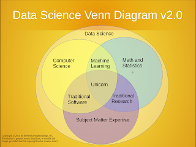
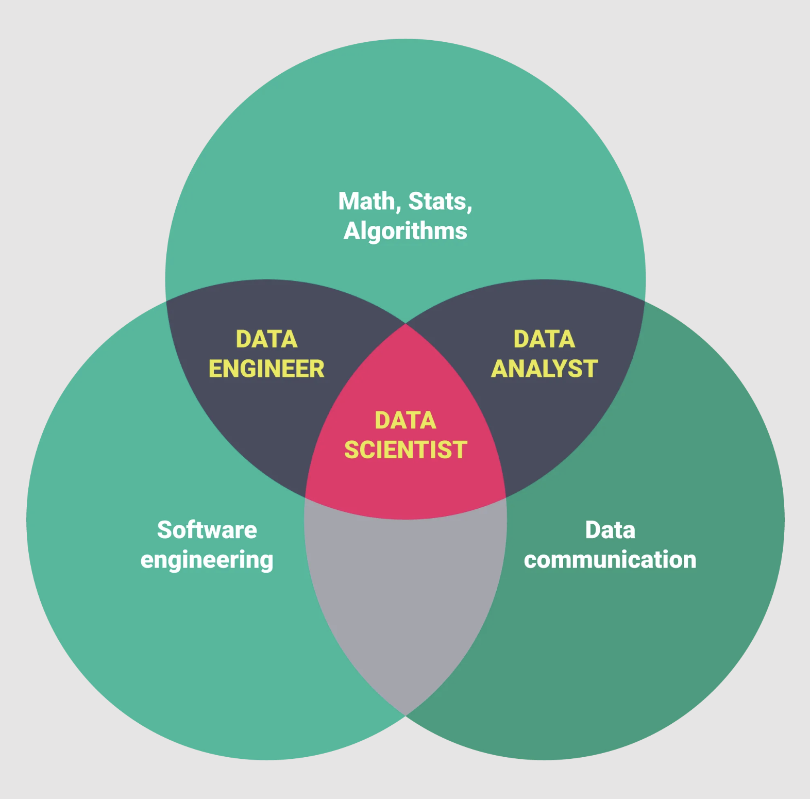
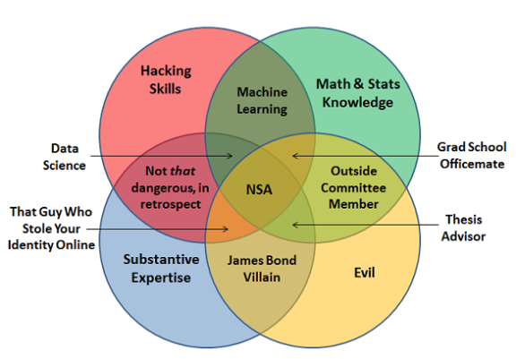
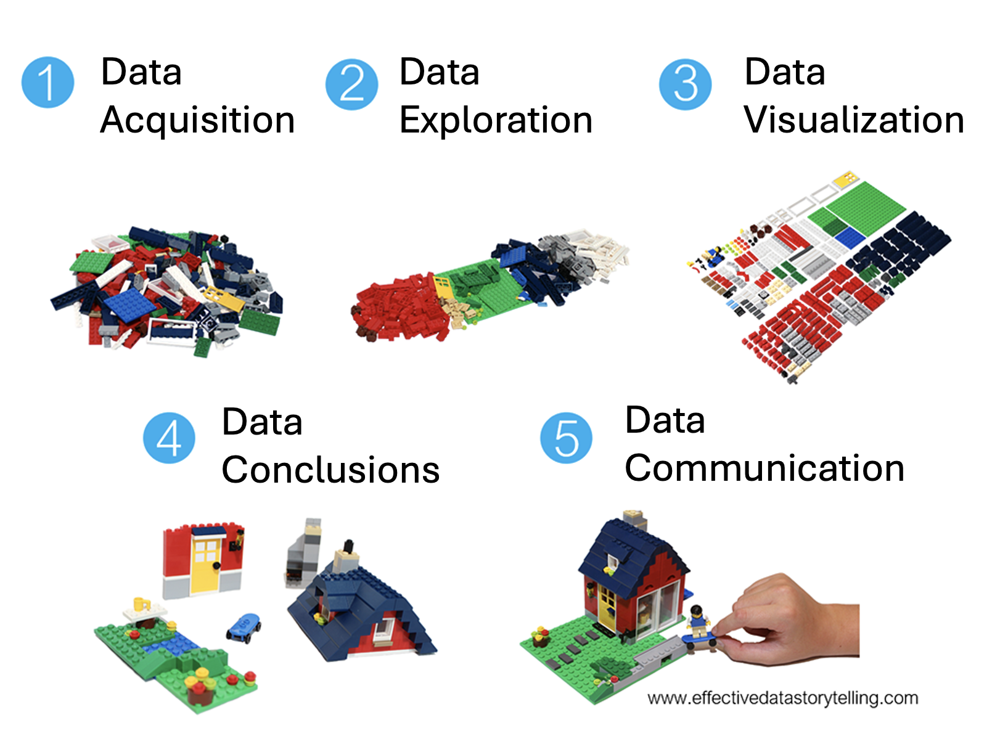
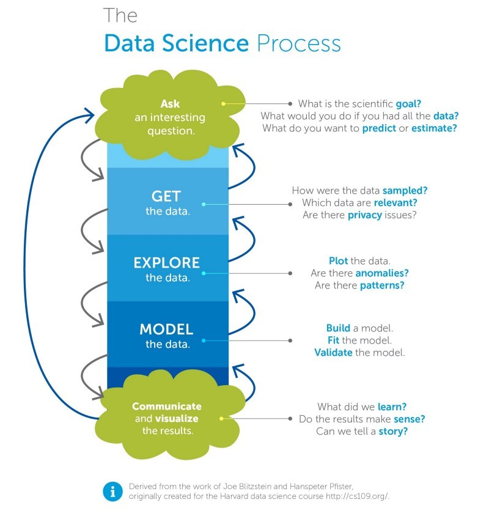
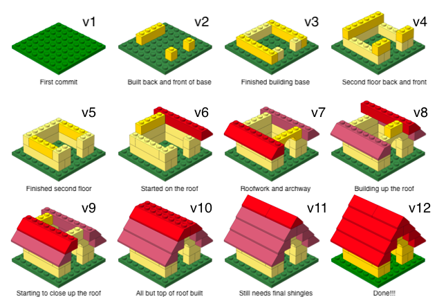
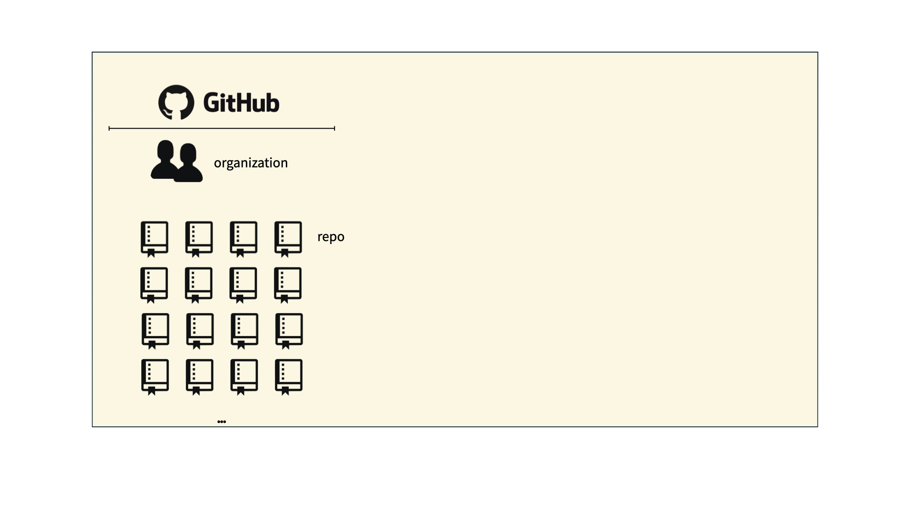
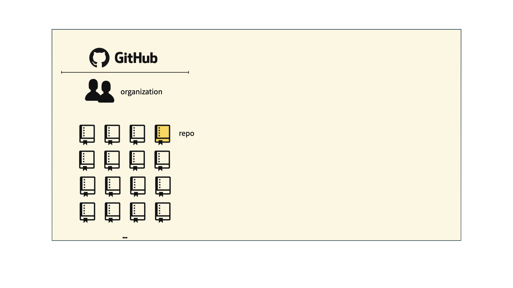
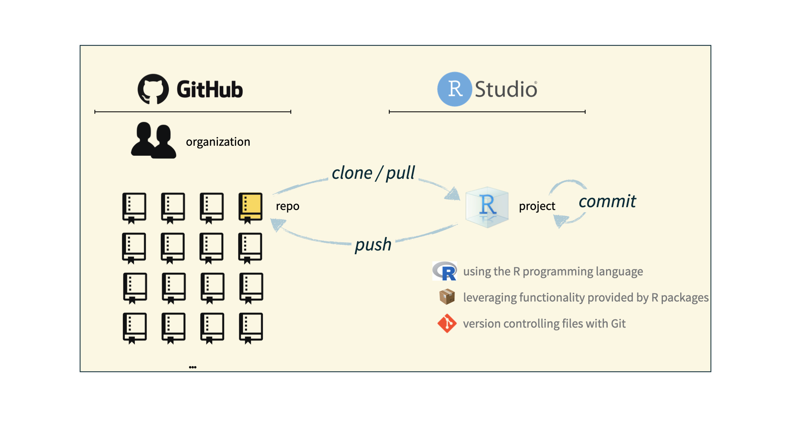

Introduction to DS002R
Foundations of Data Science
Agenda 8/25/25
- Syllabus
- What is Data Science?
- Tools
Important
Listen to the full conversation of Not So Standard Deviations - Compromised Shoe Situation.
Important
I need your GitHub user name - please email it to me.
Course structure
- bi-weekly HW (to GitHub + Gradescope)
- bi-weekly quizzes
- mini-projects
- in-class activities / clickers
- ethical considerations
Additional details
- Canvas has all the links
- course website – almost everything
- class notes
- Canvas page – solutions and assignments
- no computers (tablets fine)
- good communication
- TidyTuesday
Syllabus
- office hours
- mentor sessions
- anonymous feedback
- dates for assignments
- links to resources
- HW grading
- project information
Important
I need your GitHub user name - please email it to me.
Participation
For full participation points, you’ll need to share at least one R-tip-of-the day.
- Beginning of class, I’ll ask if anyone has ideas
- You share the tip
- I’ll post the tip online
What is Data Science?
Data science lives at the intersection between statistics, computer science, and discipline knowledge. It is generally the process by which we gain insight from data.
V1.0 - Drew Conway
V2.0 - Steve Geringer

V3.0 - Writuparna Banerjee

V4.0 - Joel Grus

Data Science Overview

Data Science in DS 002R
| DS workflow | in DS002R | beyond DS002R |
|---|---|---|
| data acquisition | web scraping, relational databases (SQL) | APIs |
| data exploration | wrangling, strings, regular expressions | natural language processing |
| data visualization | grammar of graphics | animations |
| data conclusions | iteration, permutation tests | predictive modeling, machine learning, AI |
| data communication | yes! | yes! |
Data Science in the Wild
Data science extracts knowledge from within a particular domain of inquiry. Examples from Pomona!
- Shannon Burns (Psychological Science and Neuroscience) uses data to understand brain processes of social communication.
- Charlotte Chang (Environmental Analysis & Biology) uses data to study and improve earth stewardship.
- Anthony (Tony) Clark (Computer Science) uses data to improve the safety and reliability of mobile robots.
- Manisha Goel (Economics) uses data to understand how people’s identities shape the fortunes of businesses where they work.
- Jun Lang (Asian Languages and Literatures) uses data to analyze (1) the intersection of language, gender, and society, and (2) second language acquisition and pedagogy.
- Frank Pericolosi (Physical Education) uses data to improve his team’s chances on the field.
- Ami Radunskaya (Mathematics) uses data to model tumor growth and treatment.
- Yuqing Zhu (Neuroscience) uses data to figure out how a jumble of neurons becomes smart.
Learning goals
By the end of the course, you will be able to…
- gain insight from data
- gain insight from data, reproducibly
- gain insight from data, reproducibly, using modern programming tools and techniques
- gain insight from data, reproducibly (with literate programming and version control), using modern programming tools and techniques
- ethically gain insight from data, reproducibly (with literate programming and version control), using modern programming tools and techniques

Activity
- What problem or task would you like to investigate using data?
- What would be hard about executing the project?
- What are the potential ethical frameworks to consider?
- How would you define success?
Toolkit: Computing
We use tools to do the things. But the tools are not the things.
Reproducible data analysis
Reproducibility checklist
What does it mean for a data analysis to be “reproducible”?
Short-term goals:
- Are the tables and figures reproducible from the code and data?
- Does the code actually do what you think it does?
- In addition to what was done, is it clear why it was done?
Long-term goals:
- Can the code be used for other data?
- Can you extend the code to do other things?
Toolkit for reproducibility
- Scriptability \(\rightarrow\) R
- Literate programming (code, narrative, output in one place) \(\rightarrow\) Quarto
- Version control \(\rightarrow\) Git / GitHub
R and Positron
R and Positron

- R is an open-source statistical programming language
- R is also an environment for statistical computing and graphics
- It’s easily extensible with packages
- Positron is a convenient interface for R called an IDE (integrated development environment), e.g. “I write R code in the Positron IDE”
- Positron is not a requirement for programming with R, but it’s very commonly used by R programmers and data scientists
R vs. Positron
Source: Modern Dive.
R packages
Packages: Fundamental units of reproducible R code, including reusable R functions, the documentation that describes how to use them, and sample data1
As of August 23, 2025, there are 22,553 R packages available on CRAN (the Comprehensive R Archive Network)2
We’re going to work with a small (but important) subset of these!
1 Wickham and Bryan, R Packages.
Tour: R + Positron
Tour recap: R + Positron

A short list (for now) of R essentials
- Functions are (most often) verbs, followed by what they will be applied to in parentheses:
do_this(to_this)
do_that(to_this, to_that, with_those). . .
- Packages are installed with the
install.packages()function and loaded with thelibraryfunction, once per session:
install.packages("package_name")
library(package_name)tidyverse
- The tidyverse is an opinionated collection of R packages designed for data science
- All packages share an underlying philosophy and a common grammar
Quarto
Quarto
- Fully reproducible reports – each time you
Render, the analysis is run from the beginning - Code goes in chunks
- Narrative goes outside of chunks
Tour: Quarto
Tour recap: Quarto

Environments
Important
The environment of your Quarto document is separate from the Console!
Remember this, and expect it to bite you a few times as you’re learning to work with Quarto!
Environments
First, run the following in the console:
x <- 2
x * 3All looks good, eh?
Then, add the following in an R chunk in your Quarto document
x * 3What happens? Why the error?
How will we use Quarto?
- Every assignment is an Quarto document.
- You’ll always have a template Quarto document to start with.
- The amount of scaffolding in the template will decrease over the semester.
Toolkit: Version control and collaboration
Git and GitHub

- Git is a version control system – like “Track Changes” features from Microsoft Word, on steroids
- It’s not the only version control system, but it’s a very popular one

GitHub is the home for your Git-based projects on the internet – like DropBox but much, much better
We will use GitHub as a platform for web hosting and collaboration (and as our course management system!)
Versioning - done badly

Versioning - done better

Versioning - done even better
with human readable messages

How will we use Git and GitHub?

How will we use Git and GitHub?

How will we use Git and GitHub?

How will we use Git and GitHub?

Git and GitHub tips
- There are millions of git commands – ok, that’s an exaggeration, but there are a lot of them – and very few people know them all. 99% of the time you will use git to add, commit, push, and pull.
- We will be doing Git things and interfacing with GitHub through Positron, but if you Google for help you might come across methods for doing these things in the command line – skip that and move on to the next resource unless you feel comfortable trying it out.
- There is a great resource for working with git and R: happygitwithr.com. Some of the content in there is beyond the scope of this course, but it’s a good place to look for help.
Reuse
CC-BY-SA-4.0